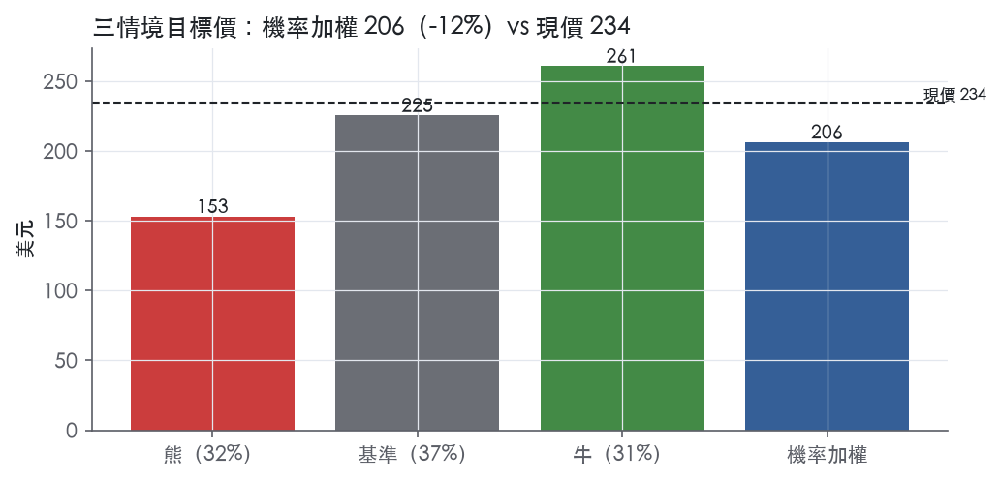
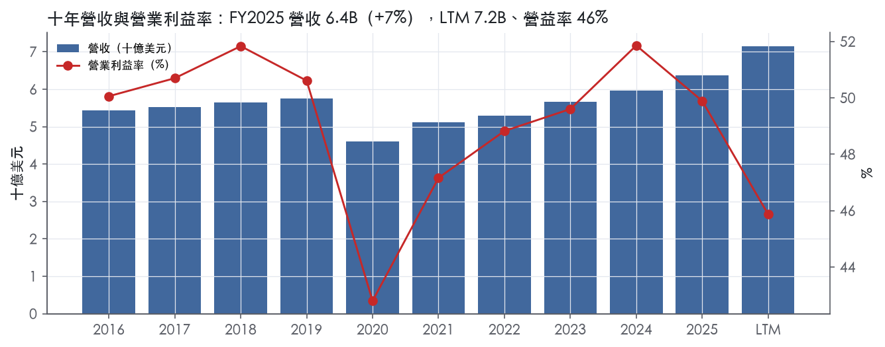
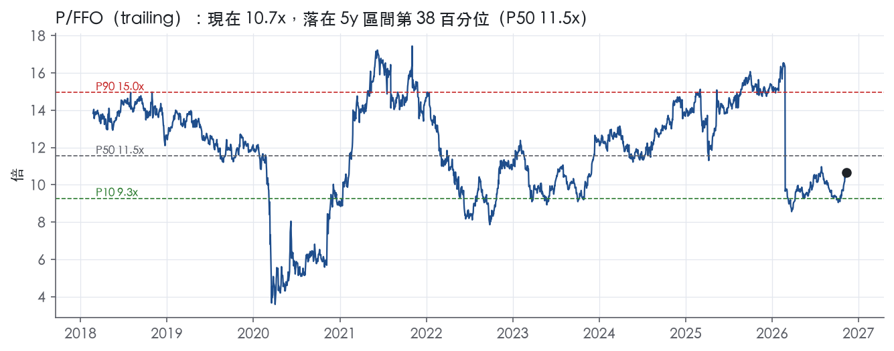
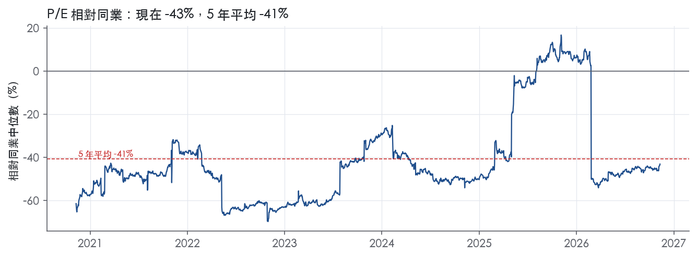
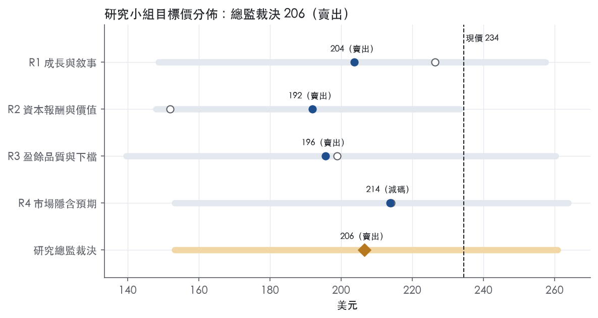
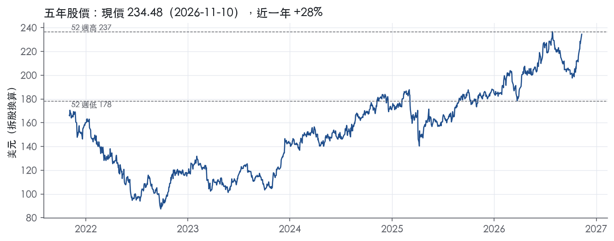

評等總表 › 不動產 › SPG
本業強但估值已付清，維持偏空｜評等 賣出｜目標價 206
| 報告日 | 評等 | 目標價 | 當時股價 | 超額報酬 |
|---|---|---|---|---|
| 2026-11-10 | 賣出 | 206 | 234 | -18.0% |
| 2026-10-02 | 減碼 | 188 | 201 | -12.2% |
| 快評 | 動作 | 結論 |
|---|---|---|
| 2026-11-05 | 維持 | 帳面利益低於預測，本業穩，維持減碼 |
| 評等 | 賣出 |
| 12 個月目標價 | 206 美元 |
| 現價 | 234.48 美元（2026-11-10） |
| 預期報酬 | 股價 -11.9%＋股息 3.8%＝總報酬 -8.1%；同業籃門檻 9.9%，超額 -18.0% |
| 估值方法 | P/FFO 15.5x，套在第 5–8 季的FFO（也就是一年後的未來四季） |
| 三情境 | 熊 153／基準 225／牛 261 |
| 研究流程 | 四位研究員兩輪辯論＋研究總監裁決 |
| 資料來源 | SEC EDGAR XBRL、Tiingo、FRED（全免費） |
本業強但估值已付清，維持偏空（研究總監裁決，四位研究員兩輪辯論後）
評等 賣出｜12 個月目標價 206 美元（總監三情境機率加權 213 與研究員中位數 200 各半）｜現價 234.48（2026-11-10）
預期報酬：股價 -11.9%＋股息 3.8%＝總報酬 -8.1%。同業籃門檻 9.9%，超額 -18.0%。
估值方法：P/FFO 15.5x，套在第 5–8 季的FFO（也就是一年後的未來四季）。三情境：熊 153（32%）／基準 225（37%）／牛 261（31%）。
什麼會讓研究總監改變看法：2027 年 Real Estate FFO 指引中值年增 ≥7% 且不靠新併購，或 FY2027Q1 國內 NOI 年增仍 ≥7%（假設門檻），倍數回到市場持平 16.3x、轉中性；占用率跌破 95.5%（假設）或新債加權利率高於 6.5%（假設），熊機率上調。
| 過去四季（實際，FY2026Q3） | 未來四季 | 第 5–8 季 | 第 9–12 季 | |
|---|---|---|---|---|
| 營收（B） | 7.2B | 7.7B | 8.1B | 8.5B |
| 營收成長 | 16.2% | 7.5% | 5.5% | 5.0% |
| 營業利益率 | 45.9% | 45.4% | 44.9% | 44.4% |
| 每股 FFO（美元） | 21.98 | 13.59 | 14.55 | 15.46 |
| FFO 成長 | 78.3% | -38.1% | 7.0% | 6.3% |
| 每股股息（美元） | 8.90 | 8.90 | 8.90 | 8.90 |
| EPS（美元） | 13.86 | 6.28 | 6.74 | 7.18 |
| P/FFO（現價） | 10.7x | 17.2x | 16.1x | 15.2x |
| 股息殖利率（現價） | 3.8% | 3.8% | 3.8% | 3.8% |
過去四季為申報數字；預測為研究總監的假設、程式計算。倍數與殖利率都用現價計算，用來看現價對應各期獲利的高低。
| 項目 | 上次（2026-10-05） | 這次（2026-11-11） | 變動 |
|---|---|---|---|
| 評等 | 減碼 | 賣出 | 變動 |
| 機率加權目標價（美元） | 188 | 206 | +9.8% |
| 超額報酬 | -12.2% | -18.0% | -5.8 pp |
| 目標倍數 | 14.0x | 15.5x | — |
| 未來四季營收成長 | 10.0% | 7.5% | -2.5 pp |
| 未來四季營益率 | 47.4% | 45.4% | -2.0 pp |
| 未來四季 EPS（美元） | 7.52 | 6.28 | -16.6% |
| 熊／基準／牛機率 | 32／34／34 | 32／37／31 | — |
程式計算；「未來四季」各自從當次報告的資料起點算。研究總監逐點說明見第八章「與上次報告比較」。
| 情境 | 機率（歷史） | 故事 | 未來四季營收成長 | 第 5–8 季營益率 | 倍數 | 目標價 | 股價漲跌 |
|---|---|---|---|---|---|---|---|
| 熊 | 32%（29%） | 對應風險表第 1 條（再融資 6.33% 以上）、第 4 條（消費轉弱、占用率跌破 95.5%）與第 2 條（倍數回歸）：本行下行路徑 Baa 2.30、失業率 5.1，倍數回到 trailing 10 年 P50 | 4.0% | 43.0% | 12.0x | 153 | -34.7% |
| 基準 | 37%（35%） | TRG 併表在 FY2026Q4 後退場、回到中個位數有機成長，到期債以 5.45%–6.33% 換新逐年侵蝕 FFO 成長，2027 指引讓倍數由市場持平回到帶 P90 | 7.5% | 44.9% | 15.5x | 225 | -3.9% |
| 牛 | 31%（35%） | 坪效 +14.8% 轉成續約加價、2027 指引年增 ≥7%，走本行上行路徑（Baa 1.45、10 年債 4.60），市場維持高於持平的倍數；y2/y3 由 R4 的 8%/7% 微調為 7%/6%（乾淨年最高 FY2023 6.9%） | 9.0% | 46.0% | 17.0x | 261 | 11.3% |
目標價由程式依研究總監的驅動與倍數計算；機率由研究總監給定。括號內是歷史頻率：把這檔股票過去十年 12 個月報酬的波動形狀，置中在基準情境，結果落在各情境附近的比例。

四位研究員用不同方法各自估值，回應研究總監的質疑後交出第二輪，最後由總監逐點裁決。各研究員的主張見第七章，裁決理由見第八章，完整論證見《研究底稿》。
| 立場（一輪→二輪） | 加權目標價（一輪→二輪） | 評等（一輪→二輪） | 第二輪倍數 | 熊～牛目標價 | |
|---|---|---|---|---|---|
| R1 成長與敘事 | 中性→看空 | 226→204 | 減碼→賣出 | 14.5x | 149～258 |
| R2 資本報酬與價值 | 看空→看空 | 152→192 | 賣出→賣出 | 14.5x | 148～233 |
| R3 盈餘品質與下檔 | 看空→看空 | 199→196 | 賣出→賣出 | 13.5x | 140～260 |
| R4 市場隱含預期 | 看空→看空 | 214→214 | 減碼→減碼 | 15.5x | 153～264 |
| 研究總監裁決 | 看空 | 206 | 賣出 | 15.5x | 153～261 |
目標價由程式依各自的驅動與倍數計算；評等＝機率加權總報酬 − 同業籃門檻。
Simon Property Group 是一家自主管理的不動產投資信託（REIT），以擁有、開發與管理頂級購物、餐飲、娛樂與複合用途目的地為核心業務¹。截至 2025 年 12 月 31 日，公司在美國擁有或持有 212 個收益型物產的權益，包含 108 座 mall、70 座 Premium Outlets、16 座 The Mills、6 座 lifestyle centers 及 12 座其他零售物產，分布於 38 州與波多黎各，另在亞洲、歐洲與加拿大持有 42 座國際物產的權益¹。公司的客戶本質上是兩層：一層是承租物理零售空間的品牌零售商，另一層是最終進場消費的零售顧客與遊客。
Simon 的資產組合可分為三大產品線：mall、Premium Outlets、The Mills，外加 lifestyle centers 與其他零售物產¹。公司並持有 Klépierre SA 22.2% 股權，這是一家總部位於巴黎、在歐洲 13 個國家擁有購物中心權益的上市公司，視為公司的歐洲曝險¹。除核心零售地產外，公司還握有「其他平台投資」，包括零售營運商 Catalyst Brands LLC、電商合資 Rue Gilt Groupe（經營 shop.simon.com）以及全球地產投資管理公司 Jamestown¹。2025 年 10 月 31 日，公司完成 TRG Acquisition，取回先前未持有的 12% The Taubman Realty Group 權益，使 TRG 併表比例由 88% 增至 100%，顯示公司持續透過併購整合高端 mall 資產¹。10-K 未揭露各分部（mall / Premium Outlets / The Mills）各自占營收的精確比重，僅以物產數量呈現規模分佈。從財務面看，公司整體營運槓桿高，FY2025 營益率 49.9%（is.營益率.FY2025），顯示核心零售地產出租業務毛利結構穩定。
公司的核心通路是實體零售空間出租，但明確點名與電商及目錄零售的競爭關係，顯示公司自身也在往零售生態系布局以對沖純電商威脅¹。公司認為物產對零售商具吸引力的關鍵因素包括租戶的品質、區位與多樣性、公司的管理與營運專業、與租戶／貸款人／供應商的廣泛關係與經驗、消費者導向的行銷與策略聯盟，以及實體零售的效率與即時性¹。地區上，美國本土是收入主體（212 座物產），國際布局則集中於亞洲、歐洲與加拿大（42 座物產）加上 Klépierre 的歐洲曝險¹。公司在財報中固定揭露「美國 Malls and Premium Outlets」的營運指標（占用率、每平方英尺基本最低租金、每平方英尺零售商銷售額），顯示這塊子組合是投資人關注的核心指標群。
FY2025Q4 營收 1.79B，年增 13.2%，營益率 49.7%，淨利 3.54B、EPS 9.35，淨利與 EPS 大幅跳升主要反映 TRG Acquisition 完成後的會計效果。FY2026Q1 營收 1.76B，年增 19.3%，但營益率降至 43.4%，淨利回落至 0.57B、EPS 1.48，顯示Q4 的淨利/EPS 跳升屬一次性。FY2026Q2，公司淨利 483.1M 美元，每股 1.49 美元，較去年同期 556.1M 美元、每股 1.70 美元下滑，但去年同期含每股 0.21 美元的稅後非現金投資收益²；Real Estate FFO 達 1.249B 美元，每股 3.29 美元，年增 7.9%，公司並上調 2026 全年 Real Estate FFO 每股指引至 13.20–13.30 美元²。FY2026Q3，淨利 499.0M 美元，每股 1.54 美元，較去年同期 606.2M 美元、每股 1.86 美元下滑，本季淨利包含因 Klépierre 可交換債券按市值重評估及一項未合併其他平台投資標的掛牌後重估，造成稅後非現金損失 99.6M 美元、每股 0.27 美元³；Real Estate FFO 達 1.277B 美元，每股 3.37 美元，較去年同期 1.215 億美元、每股 3.22 美元增長 4.7%，國內物產 NOI 增 6.6%，整體組合 NOI 增 6.7%³。公司同時第二度上調 2026 全年 Real Estate FFO 每股指引至 13.30–13.40 美元，並將第四季普通股股息提高至每股 2.30 美元（年增 4.5%）³。資金策略上，公司透過 50 億美元無抵押循環信用額度（Credit Facility）加 35 億美元補充額度（Supplemental Facility）維持流動性，Q3 末流動性約 9.0B 美元，含現金 1.3B 美元與未動用額度 7.7B 美元，並於當季完成兩批共 800M 美元優先無抵押票券發行（加權平均年期 7.7 年、票息 5.45%）及約 970M 美元的七筆抵押貸款（加權平均利率 6.33%）³。
CEO Eli Simon 在 2026Q3 法說稿中表示，租賃動能持續，租金與占用率上升，來客流量增速連續第三季加速，帶動租戶銷售全面強勁成長，公司因此再度上調全年 Real Estate FFO 每股指引並提高季度股息³。2026Q3 美國 Malls and Premium Outlets 占用率達 96.5%，較去年同期 96.4% 微升；每平方英尺基本最低租金 62.75 美元，較去年同期 59.14 美元增 6.1%；trailing 12 個月每平方英尺零售商銷售額達 852 美元，較去年同期 742 美元增 14.8%³。公司在 10-K 中強調其投資政策以權益型不動產投資為主，並維持投資級信評以取得優惠資金成本，作為財務策略的核心¹；公司也明確將 Catalyst Brands、Rue Gilt Groupe、Jamestown 等「其他平台投資」列為核心地產業務之外的成長布局¹。綜合來看，Simon 的成長引擎是「核心資產組合的量價齊升（occupancy＋租金＋銷售額三項指標同步走高）疊加併購整合（TRG）與資本市場槓桿操作」，而非新開發驅動的規模擴張。公司連續兩次上調全年指引且同步升息環境下仍完成多筆優先票券與抵押貸款發行，顯示其資金取得能力與零售基本面均處於相對強勢階段。但 FY2026 淨利與 EPS 連續受一次性項目（TRG 會計效果、Klépierre 債券按市值重評估）干擾，拆解 FFO 與 GAAP 淨利的差異是判讀本益比合理性的關鍵。

Simon 的護城河評為窄、趨勢穩定：頂級零售區位稀缺，加上投資級融資成本，足以支撐未來 5 年以上 ROIC 高於資本成本；但利差太薄、可驗證年數太短，撐不起寬護城河。 決定性的證據是 ROIC 只比資本成本代理值高出約 1 個百分點，任何利率或租金逆風都可能吃掉這段距離。
效率規模（主要來源）：優質零售地段供給有限，先佔者具有在地近乎獨占的位置，後進者很難在同一商圈再蓋一座同級 mall 而不摧毀雙方報酬。 公司自承競爭不只在租戶端，也在「prime sites（含開發用地與營運中物產）的取得」上¹。 截至 2025 年 12 月 31 日，公司在美國擁有或持有 212 個收益型物產權益，含 108 座 mall、70 座 Premium Outlets、16 座 Mills，分布於 38 州與波多黎各¹。 公司列出物產受零售商青睞的首要因素是「物產的品質、區位與租戶多樣性」¹。 2025 年 10 月 31 日完成 TRG Acquisition，取得原先未持有的 12% 權益¹，讓高端 mall 資產完全併入，強化了區位組合的稀缺性。
成本優勢（融資面）：重資產、高配息的 REIT 模式下，資金成本就是主要成本項，Simon 的信評優勢可以直接轉成利差。 Operating Partnership 擁有 5.0B 美元無擔保循環信用額度與 3.5B 美元補充額度¹。 依目前信評，兩者利率皆為 SOFR 加 70.0 個基點，另加 LIBOR 轉 SOFR 的利差調整¹。 公司另有 2.0B 美元全球無擔保商業本票計畫¹，並表示會致力於隨時維持投資級信評¹。 規模較小的同業拿不到同等條件，這是收購與再開發時出價能力的來源。
無形資產（次要）：Premium Outlets® 與 The Mills® 是註冊商標¹。 但租戶付租金是為了區位與人流，不是為了商標本身，因此這一項只列為輔助。
轉換成本與網路效應不列入：Item 1 沒有提供租約年限或租戶續約率的證據，「租戶多樣性吸引來客」也不足以構成可驗證的網路效應。
看得到，但只到「窄」的程度：ROIC 十年平均 10.9%，高於資本成本代理值 9.9%，利差僅 1.0%。 有資料的三年 ROIC 分別是 FY2023 10.1%、FY2024 11.7%、FY2025 10.8%，三年都高於資本成本。 ROIC 標準差 0.7%，穩定度符合護城河特徵。 問題在於只有 3 年樣本，而且最低值 10.1% 離資本成本不遠，所以「十年以上」這個寬護城河門檻沒有證據可以背書。
營業利益率十年平均 49.3%、標準差 2.5%，波動小，支持區位定價力的主張。 即使在 FY2020 營收衰退 19.9%的極端壓力下，營益率最低也只到 42.8%，隔年即回到 47.2%。
數字也有衝突：FY2026 三季營益率分別為 43.4%、46.0%、44.3%，都低於十年平均，已接近 FY2020 的谷底水準。 我們傾向把這段下滑歸因於 TRG 全面併表帶來的組合與費用結構變化，而不是定價力流失，因此維持「穩定」而不下修為「變窄」。 但如果 FY2026Q4 之後營益率仍回不到 47% 以上，趨勢應改判為變窄。
ROE 131.6%來自槓桿與 FY2025 一次性淨利，不能當作護城河證據。
最大的結構性威脅是電商分流，而且租戶本身就是競爭者：公司明言與網路零售及目錄競爭，「包括我們的租戶」¹。 公司也承認，競爭替代方案的存在可能對出租能力與租金水準造成重大不利影響¹。
第二個威脅是利率：資本成本代理值是 10 年債加 5%，目前 10 年債為 4.88%。 只要 10 年債殖利率再上行與利差（1.0%）相當的幅度，代理資本成本就會追平 ROIC，護城河在數字上會消失。 淨負債 27.85B加上 REIT 至少須分配 90% 應稅所得、必須定期進入債市¹，代表融資成本優勢會隨信評與利率環境同步縮放。
第三個威脅是資本密集度：FY2025 資本支出占營收 14.7%，是十年區間的高位。 如果維持區位吸引力所需的再開發投入持續升高，ROIC 分子會被擠壓。
第四是非核心投資：Catalyst Brands、RGG、Jamestown 等其他平台投資¹不在地產護城河的保護範圍內，會稀釋整體報酬的穩定性。
目標倍數相對 mall／outlet REIT 同業應持平、不給溢價：護城河真實存在但利差只有 1.0%，可見度約 5 年，撐不起長期溢價。 現行 EV/EBITDA 20.2x 已位於自身 5 年分位 89.1%，P/FCF 22.6x 位於 98.1%，市場已預先反映優勢，估值研究員不宜再以護城河為由上調倍數。 折現期間超過 5 年的部分，應假設 ROIC 向資本成本收斂。
| 指標 | 最新 | 十年平均 | 標準差 | 最低 | 最高 |
|---|---|---|---|---|---|
| ROIC | 10.8% | 10.9% | 0.7% | 10.1% | 11.7% |
| 營業利益率 | 49.9% | 49.3% | 2.5% | 42.8% | 51.9% |
| FCF 利潤率 | 50.3% | 51.9% | 5.5% | 40.0% | 60.8% |
| ROE | 131.6% | 81.1% | 22.5% | 45.9% | 131.6% |
程式計算。資本成本代理值（10 年債＋5%）：9.9%；ROIC 平均減資本成本：1.0%；ROIC 有資料的 3 年中，高於資本成本 3 年。
SPG 的 GAAP 淨利與每股盈餘因 TRG 收購的一次性非現金重估利得而嚴重失真，剔除後核心營運穩健，但槓桿與利息保障雙雙落在量化底稿的紅燈區，且近三年現金轉換率弱於十年平均，屬於需要打折但不算惡化的中等品質狀態。
LTM 營業現金流／淨利僅 0.82x，低於十年平均 1.45x 與近三年平均 1.22x，燈號為黃【量化底稿】。LTM 自由現金流／淨利 0.64x，同樣低於十年平均 1.16x，燈號黃【量化底稿】。這個弱化主因是 FY2025 淨利被 TRG 重估利得大幅墊高（淨利 5.36B 對 CFO 4.14B），但現金流本身沒有對應增加，拉低了轉換率，這是分母失真而非現金收款出問題。應計比率 LTM 為 2.4%，雖然轉正但遠低於紅燈 >5.0% 的門檻，且十年平均是 -2.9%，顯示長期盈餘是現金支撐、本期的正值主要來自同一筆非現金利得。
FY2025 全年 GAAP 稀釋 EPS 從 7.26 美元跳升至 14.17 美元，公司在 MD&A 明確指出主因是「與 TRG 收購相關、將原持有 88% 非控制權益按公允價值重新計量產生的非現金利得 29 億美元（每股 7.56 美元）」，以及一筆處分一項未合併物業的非現金利得 2160 萬美元（每股 0.06 美元）⁴。這兩筆是純粹的會計重估與資產處分，不是可持續的核心獲利，估值不應給予倍數。此外 FY2025 認列一筆稅前非現金淨損 8610 萬美元（每股 0.23 美元），主要與 Catalyst 內部重組活動及部分權益工具帳面價值減損有關⁴；FY2024 比較期則有出售 ABG 剩餘股權的稅前利得 4.148 億美元（每股 1.10 美元）與 J.C. Penney 收購 SPARC Group 零售業務產生的非現金稅前利得 1.005 億美元（每股 0.27 美元），同期也有一筆 5700 萬美元（每股 0.15 美元）的其他非暫時性減損⁴。
3Q2026 新聞稿顯示，GAAP 淨利 4.99 億美元（每股 1.54 美元）低於去年同期 6.062 億美元（每股 1.86 美元），其中包含與 Klépierre 可交換債券及一家未合併其他平台投資公開上市權益證券重估相關的非現金稅後損失 9.96 億美元（每股 0.27 美元）³。公司非 GAAP 核心指標 Real Estate FFO 為 12.77 億美元（每股 3.37 美元），較去年同期 12.15 億美元（每股 3.22 美元）成長 4.7%³；FFO 為 11.72 億美元（每股 3.09 美元）³。Real Estate FFO 的定義是把 FFO 扣除其他平台投資、處分／交換／重估權益的損益（稅後），以及公開交易權益工具與衍生工具公允價值未實現損益（稅後）³，這個調整邏輯與 TRG 重估利得的性質一致，說明公司自己也認為這類盈餘不是核心可持續現金流。FY2025 全年 D&A 增加 1.611 億美元（每股 0.43 美元），主因是收購與開發活動、多數與 TRG 收購有關⁴，這是真實的非現金成本，但隨著資產基礎擴大會持續存在，不宜加回視為一次性。公司未單獨揭露 SBC 金額，僅提及「績效股票薪酬應計數因應目前結果與未來預期而調整」造成本部與地區辦公室成本增加 2850 萬美元（每股 0.08 美元）⁴，計分表 SBC／營收因此顯示「—」，無法評估【量化底稿】。
淨負債在 FY2025 從 22.86B 跳升至 27.61B，主因是 TRG 收購當季合併抵押貸款增加 31 億美元⁴，以及新發美元與歐元優先無擔保債券⁴。總抵押貸款從 FY2024 的 5.0B 增至 FY2025 的 8.2B（抄：10-K Item 7，TRG 收購部分即佔 3.1B）。固定利率債務佔比高，整體有效借款利率從 3.62% 升至 3.87%⁴，公司指出浮動利率債務僅佔合併總債務的 1.1%⁴，利率風險暴露有限。流動性充足：截至 2026 年第三季，公司有約 9.0B 流動性，包含 1.3B 現金（含合資企業份額現金）及 77 億美元循環信用額度可用餘額³。資本配置上，FY2025 支付股東股息與單位持有人分配約 3.2B，加上優先單位分配 450 萬美元⁴，同時回購普通股 2.268 億美元⁴；3Q2026 單季回購 113.7182 萬股，均價 207.98 美元，總投入 2.365 億美元³。稀釋股數十年來幾乎沒有膨脹（FY2016 的 0.31B 到 FY2025 的 0.33B），回購規模不大但維持股數穩定，不構成稀釋風險。
淨負債／EBITDA 紅燈（LTM 5.43x，近三年平均 5.70x）：這是真實槓桿問題，但對 REIT 而言部分是結構性的——公司的融資策略長期依賴固定利率長期負債購置長壽命收租資產⁴，該比率在 REIT 同業中並非異常低，且 FY2025 的跳升主因是 TRG 收購合併了 31 億美元抵押貸款這筆一次性事件⁴，而非營運現金流惡化造成槓桿攀升。不過即便排除 TRG 因素，十年平均 6.03x 顯示長期槓桿偏高是常態而非單一事件，此燈號應視為結構性限制而非短期警訊，仍須在估值上反映。
利息保障倍數紅燈（LTM 2.94x，近三年平均 3.32x）：真實問題，公司有效借款利率持續上升（FY2024 的 3.62% 升至 FY2025 的 3.87%⁴），且 FY2025 利息費用因新發美元與歐元債券及 TRG 收購相關擔保債務增加而上升 6900 萬美元⁴。公司在合約義務表中揭露未來利息支付總額達 8.6615B（2026 至 2030 年後分期）⁴，顯示付息負擔會持續墊高，此紅燈不是一次性，是槓桿結構的延伸結果，應與淨負債／EBITDA 紅燈一併看待。
淨利率 FY2019→FY2020 跳動 -14 個百分點：這段位於資料包十年窗內但 MD&A 節錄未涵蓋該年度細節，惟 FY2020 營收年增 -19.9%明顯對應新冠疫情期間零售與購物中心營運中斷，屬宏觀一次性外部衝擊，非會計口徑問題。
淨利率 FY2020→FY2021 跳動 +22 個百分點：對應疫情後營運復甦、營收年增 11.1%，屬於基期效應的正常回升，非盈餘品質警訊。
淨利率 FY2024→FY2025 跳動 +39 個百分點：已在上文「公司調整了什麼」詳述，主因是 TRG 收購產生的 29 億美元非現金重估利得⁴，這是本章最關鍵的假警報來源——程式抓到的淨利率跳動完全可用一次性非現金會計重估解釋，核心 NOI 僅成長 4.7%⁴，與淨利跳升幅度完全不成比例。
估值應以 Real Estate FFO／FFO 為基礎而非 GAAP 淨利，因為 FY2025 與 3Q2026 的 GAAP 數字都被 TRG 重估與權益工具公允價值變動等非現金項目嚴重扭曲。核心盈餘不需要額外打折，現金轉換率的黃燈主要是分母（TRG 重估利得）失真所致，而非營運收現能力惡化，但淨負債／EBITDA 與利息保障兩項紅燈反映真實且結構性的高槓桿，應對估值倍數設上限，不宜套用同業中較寬鬆的 EV/EBITDA 倍數。
| 項目 | LTM | 近三年 | 十年 | 燈號 | 規則 |
|---|---|---|---|---|---|
| 營業現金流／淨利 | 0.82x | 1.22x | 1.45x | 黃 | ≥1.00x 綠、<0.80x 紅 |
| 自由現金流／淨利 | 0.64x | 0.97x | 1.16x | 黃 | ≥0.90x 綠、<0.60x 紅 |
| 應計比率（(淨利−CFO)／平均總資產） | 2.4% | -1.3% | -2.9% | 黃 | ≤0.0% 綠、>5.0% 紅 |
| SBC／營收 | — | — | — | — | ≤3.0% 綠、>8.0% 紅 |
| 淨負債／EBITDA | 5.43x | 5.70x | 6.03x | 紅 | ≤1.50x 綠、>3.00x 紅 |
| 利息保障倍數（營業利益／利息） | 2.94x | 3.32x | 3.28x | 紅 | ≥8.00x 綠、<3.00x 紅 |
| 稀釋股數年變動 | -0.2% | -0.1% | 0.5% | 綠 | ≤0.0% 綠、>3.0% 紅 |
| （股利＋回購）／淨利 | — | 4.8% | 10.8% | 黃 | ≥50.0% 綠、<0.0% 紅 |
程式計算；燈號以 LTM（無則近三年平均）判定。
| 風險 | 觸發指標（看什麼數字、在哪裡看） | 對 EPS 的影響方向與粗略幅度 | 未來 12 個月發生機率（高／中／低） | 出處 |
|---|---|---|---|---|
| 利率上行推升再融資成本、壓縮倍數 | ust10y／ust2y（FRED，現為 4.88／4.56）；下次優先票券發行票息（看 8-K）；變動利率債務餘額 311.0M 美元 | 方向：負；幅度中－大（票息每升 1pt，28.6B 債務逐年展期部分利息支出上升） | 中 | ⁵⁵ |
| 倍數回歸：EV/EBITDA、P/FCF 站上歷史高分位 | 分位 89.1%； 分位 98.1% | 方向：負；對股價倍數影響大，EPS 本身不受影響但本益比壓縮風險高 | 中 | 研究判斷 |
| 一次性非現金項目持續扭曲 GAAP EPS，誤導市場對盈餘品質判斷 | 每季 8-K 揭露的「non-cash after-tax losses/gains」細項（如 Klépierre 可交換債按市值重評估） | 方向：雙向；FY2026Q3 單季即造成 EPS 減損 0.27 美元³ | 高 | 8-K 財報新聞稿（2026-11-05） |
| 零售環境與消費支出轉弱侵蝕租戶銷售與 overage rent | trailing 12M 每平方英尺零售商銷售額（現 852 美元，年增 14.8%）；美國 Malls/Premium Outlets occupancy（現 96.5%） | 方向：負；幅度中，影響 NOI 成長率與租金重議能力 | 低 | ³⁵ |
| 聯合開發／合資物產（110 處中 88 處權益法）控制力有限，夥伴信用惡化拖累 | 合資夥伴破產公告；Operating Partnership 對合資抵押債務的擔保餘額（現 118.8M 美元） | 方向：負；幅度小－中，單一事件影響有限但集中度上升時放大 | 低 | 10-K 年報 FY2026 Item 1A（風險因素） |
利率與再融資成本是目前最該盯的風險，因為公司明確承認依賴債務融資支撐成長與到期債務償還，而利率上升會「提高未避險變動利率債務的利息成本」並可能限制到期時以有利條件再融資的能力⁵。公司截至 2025 年底變動利率債務僅 311.0 百萬美元⁵，本身曝險不大，但真正的風險在固定利率債到期後的「展期利差」——公司本季以 5.45% 票息發行 800M 美元優先票券、以 6.33% 利率完成 970M 美元抵押貸款³，顯示新增融資成本已明顯高於歷史水準，若 ust10y 維持在 4.88 附近甚至走高，未來到期的低成本舊債置換成新債將逐年侵蝕 FFO 與 EPS。
倍數回歸風險不是公司 10-K 會寫的，但對股價的衝擊可能最大。SPG 目前 EV/EBITDA 20.2x 位於 5 年分位 89.1%、P/FCF 22.6x 位於 5 年分位 98.1%，遠高於過去 10 年中位數（ev_ebitda 17.7x）。這代表市場已經為「租金＋occupancy＋銷售額三項指標同步走高」的敘事付出高溢價，一旦任何一項指標轉弱或利率環境改變折現率假設，股價承受的倍數壓縮風險遠大於盈餘本身的波動。
一次性非現金項目扭曲 GAAP EPS 是監測盈餘品質時必須拆解的項目。本季淨利 499.0M 美元、EPS 1.54 美元，其中包含 Klépierre 可交換債券按市值重評估與一項未合併投資標的掛牌後重估造成的稅後非現金損失 99.6M 美元、每股 0.27 美元³；去年同期 EPS 1.86 美元也含類似性質項目但方向相反。這類項目在過去幾個季度（FY2025Q4 淨利跳升至 3.54B／EPS 9.35，疑似受 TRG Acquisition 會計效果影響）反覆出現，意味著單季 GAAP EPS 的年增率不能直接拿來做估值基礎，必須對照 Real Estate FFO 每股數字（本季 3.37 美元，年增 4.7%）³。
零售環境與消費支出轉弱目前數字仍強——occupancy 96.5%、基本最低租金年增 6.1%、零售商銷售額年增 14.8%³——但公司在 10-K 風險摘要首條就點名「影響零售環境的宏觀與地緣政治條件」會直接衝擊 overage rent 與未來租約議價力⁵。目前趨勢向上，所以列為低機率，但這是監測清單中最容易被財報新聞稿第一時間揭露的領先指標，一旦連續兩季零售商銷售額年增率轉降，就是基本面轉弱的訊號。
合資物產控制力有限屬於結構性但目前規模可控的風險。公司在 110 處收益型物產中，88 處採權益法入帳、其中僅 51 處由公司擔任一般合夥人或物業管理人，29 處國際合資物產公司完全不具主導權⁵。公司目前對合資相關抵押債務的擔保僅 118.8 百萬美元⁵，絕對金額相對 28.6B 美元總負債規模很小，因此列為低機率、小幅度影響，但若單一大型合資夥伴（如 Klépierre 體系內）出現信用事件，擔保條款可能被觸發。
現價 234.48 對應 trailing（過去四季）P/FFO 10.7x、EV/EBITDA 20.2x、股息殖利率 3.8%、P/E 16.9x。主要估值倍數 P/FFO 現在 10.7x，落在5 年區間第 38 百分位（P10／P50／P90 = 9.3x／11.5x／15.0x）。

把程式的機械基準預測放到現價下，市場付的前瞻倍數是：P/FFO（未來四季） 16.1x、P/E（未來四季） 34.3x、P/FFO（第 5–8 季） 14.3x、P/E（第 5–8 季） 30.0x。反推 DCF 顯示市價隱含未來五年營收年成長 9.5%（WACC 9.0%、終值成長 3.0%、FCF 利潤率 58.3%，SBC 不加回）。
| 倍數 | 現在 | 5 年 P10 | 5 年 P50 | 5 年 P90 | 現在分位 | 全期 P50 |
|---|---|---|---|---|---|---|
| P/E | 16.9x | 14.5x | 19.6x | 26.7x | 29.6% | 20.4x |
| EV/EBITDA | 20.2x | 15.6x | 17.9x | 20.3x | 89.1% | 17.7x |
| EV/Sales | 14.5x | 11.2x | 12.9x | 14.7x | 88.2% | 13.1x |
| P/FFO | 10.7x | 9.3x | 11.5x | 15.0x | 37.9% | 12.1x |
trailing 倍數（股價 ÷ 過去四季）；分位以每個交易日計算。
同業籃：MAC, KIM, REG, FRT, O（手動名單（playbooks/peers.yaml））。評等門檻 9.9%：同業「倍數不變下持有一年」的隱含報酬中位數（＝ FCF 殖利率 ×(1＋g)＋g，g 為 5 年營收年複合成長並夾在 −2%～8%），每家夾在 0～15%、P/E 低於 5 倍視為資料可疑而排除，中位數再限制在 10 年債到 10 年債＋5% 之間（同業原始中位數 11.6%）；排除：MAC（隱含報酬算不出來）、REG（隱含報酬算不出來）。
| 代號 | 市值 | 5 年營收 CAGR | 營益率 | P/FFO | P/E | EV/EBITDA | 淨負債／EBITDA | 隱含報酬 |
|---|---|---|---|---|---|---|---|---|
| SPG | 75.8B | 6.7% | 45.9% | 10.7x | 16.9x | 20.2x | 5.4x | 11.4% |
| MAC | 7.3B | 5.2% | 5.6% | 25.7x | — | 27.5x | 9.5x | — |
| KIM | 17.2B | 15.1% | 36.0% | 14.0x | 29.7x | 17.2x | 5.0x | 11.6% |
| REG | 14.0B | 8.9% | 72.3% | 14.5x | — | 12.1x | 3.1x | — |
| FRT | 9.8B | 8.9% | 53.6% | 11.1x | 19.7x | 13.5x | 4.5x | 13.5% |
| O | 56.6B | 28.4% | 24.0% | 12.8x | 40.9x | — | — | 10.6% |
| 同業中位數 | 8.9% | 36.0% | 14.0x | 29.7x | 15.4x | 4.7x | 9.9% |
全部 trailing，程式以各公司 SEC XBRL 與 Tiingo 行情計算；第一列為本檔。
P/E 相對同業中位數：現在 -43.1%，過去 1 年平均 -31.9%、3 年 -31.7%、5 年 -40.6%；EV/EBITDA 相對同業中位數：現在 17.0%，過去 1 年平均 20.1%、3 年 8.7%、5 年 4.2%。

事後實現前瞻倍數帶（P/FFO，2018-11-19..2025-11-17）：P10／P50／P90 = 7.0x／10.1x／15.5x。它是每個交易日的股價除以之後四季實際實現的指標；一年後，今天的第 5–8 季正是那時的未來四季，所以這條帶是 12 個月目標價的同口徑倍數。因為用的是事後實際而非當時預期，過去成長超乎預期的公司這條帶會偏低。
程式的機械基準（成長率從過去四季年增率三年收斂到 6%、利潤率持平）用 事後實現前瞻 P/FFO P50 估值得到 166（-29.3%），市場現行前瞻倍數（現價 ÷ 基準 未來四季指標）一年後持平，套在基準 第 5–8 季指標得到 267。這兩個數字只是參考點，不是本報告的目標價；研究員對這個定價的回應在第七章。
下表是每位研究員第一輪（各自獨立）與第二輪（回應研究總監的質疑後）的結果。目標價全由程式依各自的假設計算。
| 立場（一輪→二輪） | 加權目標價（一輪→二輪） | 評等（一輪→二輪） | 第二輪倍數 | 熊～牛目標價 | |
|---|---|---|---|---|---|
| R1 成長與敘事 | 中性→看空 | 226→204 | 減碼→賣出 | 14.5x | 149～258 |
| R2 資本報酬與價值 | 看空→看空 | 152→192 | 賣出→賣出 | 14.5x | 148～233 |
| R3 盈餘品質與下檔 | 看空→看空 | 199→196 | 賣出→賣出 | 13.5x | 140～260 |
| R4 市場隱含預期 | 看空→看空 | 214→214 | 減碼→減碼 | 15.5x | 153～264 |
| 研究總監裁決 | 看空 | 206 | 賣出 | 15.5x | 153～261 |
目標價由程式依各自的驅動與倍數計算；評等＝機率加權總報酬 − 同業籃門檻。
分歧度：第一輪 加權目標價 152～226（區間＝現價的 32%）· 倍數 10.5～16x · 立場 中性×1、看空×3；第二輪 加權目標價 192～214（區間＝現價的 9%）· 倍數 13.5～15.5x · 立場 看空×4（方向一致）。

| 研究員 | 第二輪主張 | 堅持的理由 |
|---|---|---|
| R1 成長與敘事 | 偏空，目標 14.5x P/FFO；總監以他第一輪的 16.0x 看待。 | 偏空理由是估值與融資成本，不是租戶需求，熊情境不再加深。 |
| R2 資本報酬與價值 | 看空，14.5x P/FFO，錨是十年中位 12.1x 與上緣 14.9x。 | ROIC 利差只有 1.0%，完整年度 ROIC 出爐前不承認重新評價。 |
| R3 盈餘品質與下檔 | 偏空，13.5x P/FFO，四人最低：乾淨中位 13.0x 加 0.5x。 | 公司自訂的 FFO 剔除項偏寬，需打折；GAAP 每股淨利指引已下修。 |
| R4 市場隱含預期 | 看空，15.5x P/FFO，低於市場持平 16.3x；總監採用此倍數。 | 市場付的是含併表的近一成成長，2027 指引會重設到中個位數。 |
每位研究員的逐條回應與完整論證見《研究底稿》（SPG_研究底稿_2026-11-11.docx）。
| 分歧點 | R1 | R2 | R3 | R4 | 什麼資料會分出勝負 |
|---|---|---|---|---|---|
| 目標倍數與錨（multiple） | 第一輪 16.0x≈持平；第二輪 14.5x（視為漂移） | 14.5x 配 ntm，trailing 10 年 P90 下緣 | 13.5x：乾淨中位 13.0x（假設）＋同業溢價回歸 0.5x | 15.5x＝前瞻帶 P90，指引重設後低於持平 16.3x | 2027-02 指引公布後，股價對指引中值的 P/FFO 是否仍在 16x 以上 |
| 再融資逆風放哪（op_margin_y2） | 營益率、倍數兩邊扣 | 營益率照基準，只扣倍數 | D&A 重分類（FFO 中性）＋小幅拖累 | 營益率逐年 −0.5pp，倍數不扣 | FY2026 10-K 有效借款利率（現 3.87%） |
| 併表殘值（rev_growth_y1） | 7.5%，季度年增量化 | 7.5% | 7.0% | 7.0% | FY2026Q4 營收年增 |
| 2027 有機成長（rev_growth_y2） | 5.0%，經驗基準率 | 5.0% | 5.2% | 5.5%，租金 +6.1% 合約性 | FY2027Q1 營收年增、2027 指引 |
| 熊倍數與偏態（multiple, bear） | 11.5x／32% | 11.5x／34% | 11.0x／31% | 12.0x／32% | Baa 升破 2.0 或占用率跌破 95.5%（假設） |
倍數：選 R4，15.5x 配 q5_q8。 四人都同意現價付的倍數高於每條帶的 P90（市場隱含 p_ffo_NTM 16.1x；前瞻帶 P90 15.5x、trailing 10 年 P90 14.9x、5 年 P90 15.0x），爭的是一年後回到哪。前瞻帶兩端被 2020 谷底起點與 2024-11～2025-11 起點（之後四季含 FY2025Q4 的 TRG 重估利得）往下壓，上緣才是正常年份的讀數；占用率 96.5%、坪效年增 14.8%、基本租金年增 6.1%、指引二度上調³是十年表裡最強的組合，值得給到上緣。低於持平 16.3x 的兩條理由都不在現價裡：現價付的是基準 12.8%／9.4% 的機械成長，2027 年 2 月指引會重設到中個位數（Real Estate FFO 單季年增已由 7.9%²降到 4.7%）；本行 Baa 利差 1.49→1.75，敏感度表給 −6.4%（t −6.1），從 16.3x 扣掉後落點與帶 P90 相當（量級判斷）。R3 的乾淨中位 13.0x 無獨立證據，+0.5x 所依的同業溢價序列含 MAC（ROIC 0.2%）與 O（淨租賃），乾淨樣本無歷史，且他的營業利益紀錄偏低 3.0%。R2 以 trailing 10 年 P50 12.1x 為終點，那是 mall 折價年代的中位，他也承認一年內沒有觸發；劇本主尺是 ffo@ntm_plus_1，前瞻帶才是同口徑的錨。R1 第一輪的 16.0x 等於持平，漏了成長重設。
再融資：選 R4，放進營益率。 浮動利率債只佔 1.1%，新債 5.45%／6.33% 對存量 3.87%【財務體質章抄 10-K Item 7】，侵蝕隨到期逐年滲入，是盈餘路徑不是折現率；每年 0.5pp 與 FY2025 利息費用增加 6,900 萬美元量級相稱。R1 兩邊都扣是重複計算；R2 讓營益率停在含 FY2025Q4 49.7% 的 LTM 45.9%，但 FY2026Q1–Q3 已是 43.4%／46.0%／44.3%（dv.op_margin）。R3 的 D&A 重分類對 FFO 中性，LTM 已含 11 個月全額 TRG 折舊，0.9pp的位移太大，不採。
NTM 成長：選 R1，7.5%。 FY2025Q4 年增 13.2% 只含兩個月 TRG，FY2026Q1 全季 19.3%，落差說明 FY2026Q4 的單月殘值不是零；有機參照國內 NOI +6.6%³與乾淨年 FY2023 6.9%、FY2024 5.4%（dv.revenue_growth）。R3、R4 的 7.0% 沒有量化殘值，且四位研究員的營收紀錄一致偏低 0.6–0.8%。
2027 有機成長：選 R4，5.5%。 基本租金 +6.1% 是合約性收入，會帶進 2027；不給 6% 以上是本行前提 GDP 1.8、油價吃掉實質所得。R1 的「連三年超過 4% 只有兩三成」自標為經驗判斷，不是材料數據。
熊倍數：選 R4，12.0x。 熊的利差路徑 1.49→2.30 不到 1pp，單靠 −24.5%/pp 壓不到 11x 以下；12.0x 就是 trailing 10 年 P50 12.1x，再往下是 P25 8.3x 那種 2020 營運中斷的定價，不屬風險表「中」機率情境。
漂移與總經偏離。 退回 R1 的倍數修正：帶只說明 16.0x 高於原始 P90，他自己判定帶的偏誤都往下壓，修正後 16.0x 未必在帶外；再壓到 14.5x 的四條理由與 G3 已下修的營益率重複，程式算他 82% 向中位數靠攏，倍數立場以第一輪 16.0x 看待；G3、G4 有季度數字支撐，保留。R2 +26% 的上修全來自 V1、V2 指出的帶污染與觸發缺口，不算漂移。四人皆無 macro_deviations，牛熊各取本行上行／下行路徑，接受；第二輪無人再用利率水準壓倍數。
與機械基準不同的驅動（皆假設）：rev_growth_y1 7.5%、y2 5.5%、y3 5.0%——基準 12.8%／9.4%／6.0% 是含併表的 LTM 外推，TRG 2025-10-31 完成後只剩一個月殘值；op_margin 45.4%／44.9%／44.4%——基準 45.9% 含全額折舊前的 FY2025Q4，再逐年扣 0.5pp 利息代理。D&A、稅率、股數照基準；R1／R2 的 capex 14.0% 依 FY2025 14.7%，LTM 13.3% 較新，不改。
目標倍數 15.5x P/FFO 套在 q5_q8，錨是事後實現前瞻帶 P90 15.5x，同口徑不換算；相對市場持平 16.3x（程式：持平→267）的折讓，量級與上次 14.0x 對 14.9x 相當。相對同業不給溢價：護城河章評「窄」、ROIC 利差 1.0%；乾淨同業 KIM／REG／FRT 是露天中心，只做交叉驗證。
程式對 R4 相近情境的歷史讀數是牛 34／基準 37／熊 30，我的牛端更近，讀數只會略高。我給 31／37／32，偏離都在 3 點內，但順序反轉，三條理由都是本公司特有：一、起點在自身帶頂（P/FCF 5 年分位 98.1%、EV/EBITDA 89.1%），牛要市場付十年未見的 17x，熊只要回到自身十年中位；二、利差通道 t −6.1，本行基準已走寬到 1.75、下行 2.30，淨負債／EBITDA 5.43x、利息保障 2.94x【財務體質章】使傳導強於同業；三、窗內唯一有日期的催化是 2027-02 指引，Real Estate FFO 年增正在減速（7.9%→4.7%），較可能重設而非超越市場外推。這是 2–3 點的傾斜，不是本部過去 22 份報告的慣性偏態。
差距主要在盈餘：市場持平的 +17.6% 建立在基準 12.8%／9.4% 的營收成長上，我們是 7.5%／5.5%，差在 rev_growth_y1、y2；倍數只差 16.3x 對 15.5x，對應本行利差路徑。股息率 3.8% 補不足這段，且熊端距離（R4 相近情境的程式讀數約 −32%）接近牛端（約 +18%）的兩倍，機率加權總報酬低於門檻 9.9%，偏空立場與評等一致。
現價 234.48 → 點估目標價 225 → 機率加權目標價 213 → 目標價 206，差距拆成五段：成長順延 +32 美元（市場現行倍數 16.3x 一年後持平、獲利照機械基準）；倍數差 -13 美元（總監倍數 15.5x vs 市場持平倍數 16.3x，同一機械基準預測）；盈餘差 -29 美元（總監預測的第 5–8 季FFO 4.6B vs 機械基準 5.2B，同一倍數）；情境不對稱 -12 美元（機率加權減點估）；研究小組平均 -7 美元（總監機率加權 213 與研究員第二輪中位數 200 各半）。各段相加等於目標價減現價。本階段未接賣方共識，差距以市場隱含預期為對照。
| 驅動 | 機械基準 | 研究總監 | 差異 |
|---|---|---|---|
| 未來四季營收成長 | 12.8% | 7.5% | -5.3 pp |
| 第 5–8 季營收成長 | 9.4% | 5.5% | -3.9 pp |
| 第 9–12 季營收成長 | 6.0% | 5.0% | -1.0 pp |
| 未來四季營益率 | 45.9% | 45.4% | -0.5 pp |
| 第 5–8 季營益率 | 45.9% | 44.9% | -1.0 pp |
| 第 9–12 季營益率 | 45.9% | 44.4% | -1.5 pp |
| D&A／營收 | 25.9% | 25.9% | ＝ |
| 資本支出／營收 | 13.3% | 13.3% | ＝ |
| SBC／營收 | 0.0% | 0.0% | ＝ |
| 稅率 | 0.4% | 0.4% | ＝ |
| 股數年變動 | -0.9% | -0.9% | ＝ |
研究總監只寫偏移，未寫的沿用基準。
| 期 | 營收 | 成長 | 營益率 | EBITDA | 淨利 | EPS | FFO | 每股 FFO | 每股股息 | 期末淨負債 |
|---|---|---|---|---|---|---|---|---|---|---|
| 未來四季 | 7.7B | 7.5% | 45.4% | 5.5B | 2.4B | 6.28 | 4.4B | 13.59 | 8.90 | 24.5B |
| 第 5–8 季 | 8.1B | 5.5% | 44.9% | 5.7B | 2.5B | 6.74 | 4.6B | 14.55 | 8.90 | 21.0B |
| 第 9–12 季 | 8.5B | 5.0% | 44.4% | 6.0B | 2.7B | 7.18 | 4.9B | 15.46 | 8.90 | 17.3B |
程式依上表的驅動計算；季度用最近四季季節性分攤；不含營運資金變動。
估值方法：P/FFO 15.5x，套在第 5–8 季的FFO（也就是一年後的未來四季）。研究總監目標倍數的錨：事後實現前瞻 P/FFO 帶 P90 15.5x（帶受 2020 谷底與 TRG 利得窗口下壓，取上緣）；低於市場持平 16.3x 對應 2027 指引把成長由機械 12.8%/9.4% 重設到中個位數，以及本行 Baa 利差 1.49→1.75 的敏感度效果 −6.4%；相對同業不給溢價（護城河窄、ROIC 利差 1.0%）。
計算：FFO（第 5–8 季） 4.6B × 15.5x＝權益價值 71.5B，除以第 5–8 季的股數 → 點估目標價 225（-3.9%）；隱含 P/E（未來四季）35.9x、P/E（第 5–8 季）33.5x、EV/EBITDA（第 5–8 季）16.7x、FCF 殖利率（第 5–8 季）4.9%。
總監三情境機率加權目標價 213，研究員第二輪中位數 200，兩者各半＝目標價 206；預期報酬 股價 -11.9%＋股息 3.8%＝總報酬 -8.1%；減評等門檻 9.9%（同業籃隱含報酬中位數（MAC, KIM, REG, FRT, O））＝超額報酬 -18.0% → 評等 賣出（超額 >+15% 買進、+5～+15% 加碼、±5% 中立、−5～−15% 減碼、<−15% 賣出）。同一份資料重開研究小組，超額約有正負四個百分點的雜訊（一個標準差，二十檔實測）；以此估計，評等落在其他級距的機率約二成。
| 情境 | 機率 | 未來四季成長 | 第 5–8 季成長 | 第 5–8 季營益率 | FFO（第 5–8 季） | 倍數 | 目標價 |
|---|---|---|---|---|---|---|---|
| 熊 | 32% | 4.0% | 1.0% | 43.0% | 4.0B | 12.0x | 153 |
| 基準 | 37% | 7.5% | 5.5% | 44.9% | 4.6B | 15.5x | 225 |
| 牛 | 31% | 9.0% | 7.0% | 46.0% | 4.9B | 17.0x | 261 |
| 主張 | 驗證日 | 看哪個數字 | 門檻 |
|---|---|---|---|
| 2027 年 Real Estate FFO 每股初始指引中值相對 FY2026 實際值的年增率低於 7% | 2027-02-15 | 公司 2027 Real Estate FFO per diluted share 指引中值對 FY2026 實際值的年增率 | < 7% |
| TRG 併表效果退場後，FY2027Q1 營收年增回到有機水準 | 2027-05-15 | 年增率 | 介於 4% 與 8% 之間 |
| 到期債換新推升平均借款成本 | 2027-03-01 | FY2026 10-K 加權有效借款利率（FY2025 為 3.87%） | > 4.00% |
| 基本面不走熊情境：美國 Malls 與 Premium Outlets 基本最低租金年增維持 | 2027-08-15 | FY2027Q2 base minimum rent per sq ft 年增率（8-K） | >= 4.5% |
到期由程式結算（第 5 階段帳本）。
內文上標數字對應下列公司申報文件；未標上標的分析與判斷，是研究小組的觀點。報告中的每個數字都經程式逐一核對資料包或原文。
| 期 | 營收 | 成長 | 毛利率 | 營益率 | FFO | 淨利 | EPS | CFO | FCF | ROIC | 淨負債 | 稀釋股數 |
|---|---|---|---|---|---|---|---|---|---|---|---|---|
| FY2016 | 5.4B | — | — | 50.1% | 3.4B | 2.1B | — | 3.4B | 2.6B | — | 22.4B | 0.3B |
| FY2017 | 5.5B | 1.7% | — | 50.7% | 3.5B | 2.2B | — | 3.6B | 2.9B | — | 23.2B | 0.3B |
| FY2018 | 5.6B | 2.1% | — | 51.8% | 4.1B | 2.8B | — | 3.8B | 3.0B | — | 22.8B | 0.3B |
| FY2019 | 5.8B | 1.9% | — | 50.6% | 3.8B | 2.4B | — | 3.8B | 2.9B | — | 23.5B | 0.3B |
| FY2020 | 4.6B | -19.9% | — | 42.8% | 2.6B | 1.3B | — | 2.3B | 1.8B | — | 25.7B | 0.3B |
| FY2021 | 5.1B | 11.1% | — | 47.2% | 3.8B | 2.6B | 6.84 | 3.6B | 3.1B | — | 24.8B | 0.3B |
| FY2022 | 5.3B | 3.4% | — | 48.8% | 3.7B | 2.5B | 6.52 | 3.8B | 3.1B | — | 24.3B | 0.3B |
| FY2023 | 5.7B | 6.9% | — | 49.6% | 3.9B | 2.6B | 6.98 | 3.9B | 3.1B | 10.1% | 23.9B | 0.3B |
| FY2024 | 6.0B | 5.4% | — | 51.9% | 4.0B | 2.7B | 7.26 | 3.8B | 3.1B | 11.7% | 22.9B | 0.3B |
| FY2025 | 6.4B | 6.7% | — | 49.9% | 6.8B | 5.4B | 14.17 | 4.1B | 3.2B | 10.8% | 27.6B | 0.3B |
SEC XBRL；每股數據已依拆股換算到現在股數基準。EBITDA 空白 = 該年無形攤銷在 companyfacts 中缺 tag。
| 期 | 期末 | 推導 | 營收 | 毛利率 | 營益率 | FFO | 淨利 | EPS | CFO | FCF | 現金 | 總債務 |
|---|---|---|---|---|---|---|---|---|---|---|---|---|
| FY2023Q4 | 2023-12-31 | 1.5B | — | 51.9% | 1.2B | 0.9B | 2.29 | 1.0B | 0.9B | 1.2B | 26.0B | |
| FY2024Q1 | 2024-03-31 | 1.4B | — | 51.0% | 1.1B | 0.8B | 2.25 | 0.8B | 0.6B | 1.3B | 25.5B | |
| FY2024Q2 | 2024-06-30 | 1.5B | — | 51.7% | 0.9B | 0.6B | 1.51 | 1.1B | 0.9B | 1.2B | 25.3B | |
| FY2024Q3 | 2024-09-30 | 1.5B | — | 51.9% | 0.9B | 0.5B | 1.46 | 0.9B | 0.7B | 2.2B | 25.4B | |
| FY2024Q4 | 2024-12-31 | 1.6B | — | 52.8% | 1.2B | 0.8B | 2.04 | 1.1B | 0.9B | 1.4B | 24.3B | |
| FY2025Q1 | 2025-03-31 | 1.5B | — | 49.4% | 0.8B | 0.5B | 1.27 | 0.8B | 0.6B | 1.4B | 24.8B | |
| FY2025Q2 | 2025-06-30 | 1.5B | — | 49.7% | 1.0B | 0.6B | 1.70 | 1.2B | 1.0B | 1.2B | 25.4B | |
| FY2025Q3 | 2025-09-30 | 1.6B | — | 50.8% | 1.0B | 0.7B | 1.86 | 0.9B | 0.7B | 1.6B | 25.8B | |
| FY2025Q4 | 2025-12-31 | 1.8B | — | 49.7% | 4.0B | 3.5B | 9.35 | 1.2B | 0.9B | 0.8B | 28.4B | |
| FY2026Q1 | 2026-03-31 | 1.8B | — | 43.4% | 1.0B | 0.6B | 1.48 | 0.8B | 0.6B | 0.5B | 28.2B | |
| FY2026Q2 | 2026-06-30 | 1.8B | — | 46.0% | 1.0B | 0.6B | 1.49 | 1.2B | 1.0B | 1.0B | 28.7B | |
| FY2026Q3 | 2026-09-30 | 1.8B | — | 44.3% | 1.1B | 0.6B | 1.54 | 1.1B | 0.8B | 0.6B | 28.4B |
流量項目由 10-Q 的年初至今數拆成單季；Q4 = 年度 − 九個月。

本報告由 equity-desk 多代理系統產出，建置中版本，僅供內部研究與方法驗證，不構成投資建議。所有數字以 datapack.json 為準。